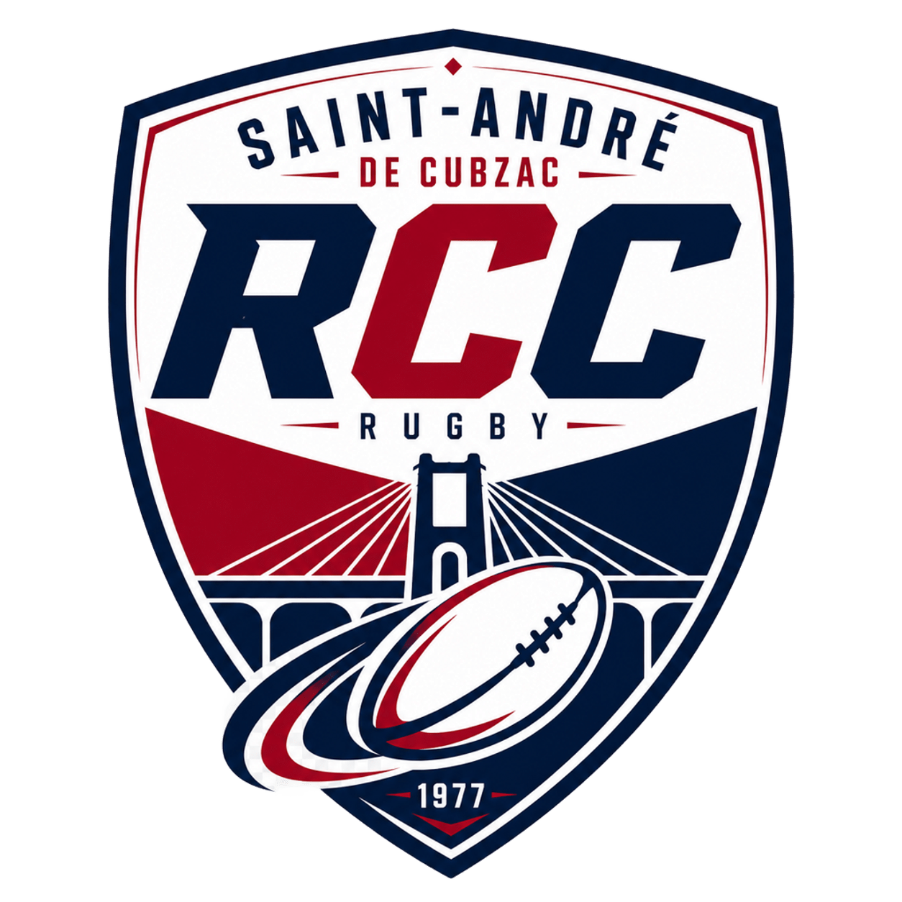

12 Jul 202615h00
RC CubzaguaisvsUS Bordeaux
Plaine des sports Lionel Ricci
Championnat
À venir
Fondé en 1977 - Régional 3

Fonde autour des valeurs de respect, solidarité et engâgement, le Rugby Club Cubzaguais rassemble joueurs, éducateurs et bénévoles de tout âge. Notre mission est de faire grandir le rugby local, former des joueuses et joueurs responsables et représenter fièrement notre territoire sur et hors du terrain.
Calendrier
Senior
Un groupe ambitieux, ancré dans le collectif, avec un jeu direct, engâge et genereux. Les entraînements sont ouverts aux joueurs motivés souhaitant progresser dans un cadre sérieux et convivial.
Formation
Apprendre les gestes essentiels, courir, partâger et prendre confiance avec le ballon.
Développer la technique, l'esprit d'équipe et le plaisir de jouer dans un cadre structuré.
Une section accueillante pour débutantes et joueuses confirmées, portée par la même exigence.
Actualités
Le groupe senior retrouve le terrain avec un cycle axé sur la vitesse, la défense et la cohésion.
Les éducateurs accueilleront les familles au stade pour presenter les catégories et les horaires.
Table de marque, buvette, accueil, logistique : chaque énergie compte les jours de match.
Nous rejoindre
Joueur, joueuse, parent, éducateur ou bénévole : viens rencontrer le club à la Plaine des sports Lionel Ricci, à Saint-André-de-Cubzac.
Saint-André-de-Cubzac
Rugby à Saint-André-de-Cubzac depuis 1977.